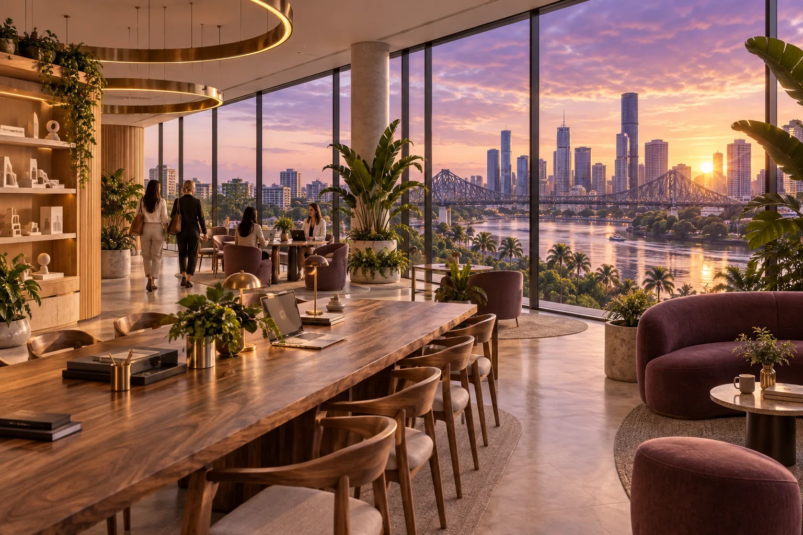

A shared home.
A bigger beginning.
Flexible desks, teaching, mentoring and connection, with 24-hour access and participation from home in the proposed model.
Start in the heart of Brisbane
500 Queen Street anchors the proposed Brisbane incubator. The idea is a place where developing executives, entrepreneurs, mentors and researchers can work alongside one another. A shared home would support concentrated work, teaching, meetings and the informal conversations that turn an introduction into a useful relationship.
Overlapping hot desks, 24-hour access and working from home are integral to the plan. A growing community should be able to participate without everyone needing a permanent desk or attending at the same time. Actual after-hours access would need to be agreed in a tenancy proposal.

AI-generated concept illustration.
Compare two fitted-office options
The 23 September 2026 planning document records the following Caden listing comparison. Annual rent figures use the annual basis supplied by Luke and are pre-incentive planning inputs. Lease terms, GST, outgoings, incentives and access conditions need confirmation for a real tenancy.
| Option | Advertised fit-out in the plan | Annual rent comparison |
|---|---|---|
| Level 2, 830 sqm | 64 open-plan workstations, 3 executive offices and meeting rooms | A$697,200 |
| Level 7, 422 sqm | 43 open-plan workstations, 1 executive office and meeting rooms | A$367,140 |
Count the whole operation
Against the old A$1 million annual operating guide, Level 2 leaves A$302,800 after rent, while Level 7 leaves A$632,860. The difference is A$330,060 annually, or A$1,650,300 over five years if rents remain unchanged. These comparisons help expose the operating question: what programme can the full budget actually support?
Add staff, learning and mentoring, marketing and events, technology and administration, access support and contingency. Include cleaning, connectivity, insurance, access control and after-hours support. Obtain quotes for the chosen arrangement before updating the five-year funding guide.
Make space work around people
One booking calendar could connect desks, teaching and events with online participation and AI Queens access from home. Weekly shared desk-hours are the number of shared desks multiplied by bookable hours. Compare actual bookings and peak attendance with that capacity.
Repeated sessions, working from home and added space can respond to demonstrated demand. People should be able to understand when a desk or session is available and which services their participation includes. The purpose is useful access across different working lives.
Share the services that matter
Oceania Healthy De-Slop Co-ops informs the wider shared-facility idea: pooled equipment, local computing and space for wellbeing and connection. Choose useful services with clear ownership, membership access, operating responsibility and contributions.
Shared computing and operator support belong in the technology budget. A rack-scale node has a separate capital and engineering case. Participant-controlled personal reflection should remain separate from operational records.
Queen's Wharf remains part of the original global-headquarters ambition. A whole-building purchase would require its own acquisition finance, rental income and property-cost analysis. The immediate planning task is a suitable shared home with a programme and operating budget that work together.